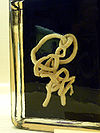

anopla

Definition: Anopla (for changes in taxonomy, see reference from 2019) has long been used as name for a class of marine worms of the phylum Nemertea, characterized by the absence of stylets on the proboscis, the mouth being below or behind the brain, and by having separate openings for the mouth and proboscis. The other long used class of Nemertea are the Enopla (for changes in taxonomy, see reference from 2019). Although Anopla is a paraphyletic grouping, it is used in almost all scientific classifications. Anopla is divided into two orders: Palaeonemertea and Heteronemertea. Palaeonemertea may be para- or polyphyletic, consisting of 3-5 groupings and totalling about 100 species. These worms have several apparently simple features and, as their name suggests, they are often considered to be the most primitive nemerteans. The primary body-wall musculature consists of an outer circular stratum overlying a longitudinal stratum. The group includes genera such as Cephalothrix in which the nerve cords are inside the body-wall longitudinal muscle, and Tubulanus, in which the nerve cords are between the outer circular muscle and the epidermis. Tubulanids are commonly encountered in rocky areas of intertidal zones in the northern hemisphere. They are often bright orange or have very distinctive banding and or stripes and can be many meters long, although only a few mm thick.
Source: Wikipedia
Wikipedia Page (Something wrong with this association? Let us know.)
Wikidata Page (Something wrong with this association? Let us know.)